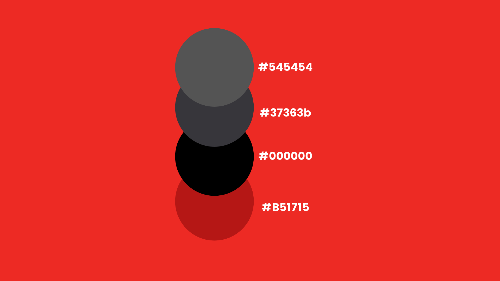
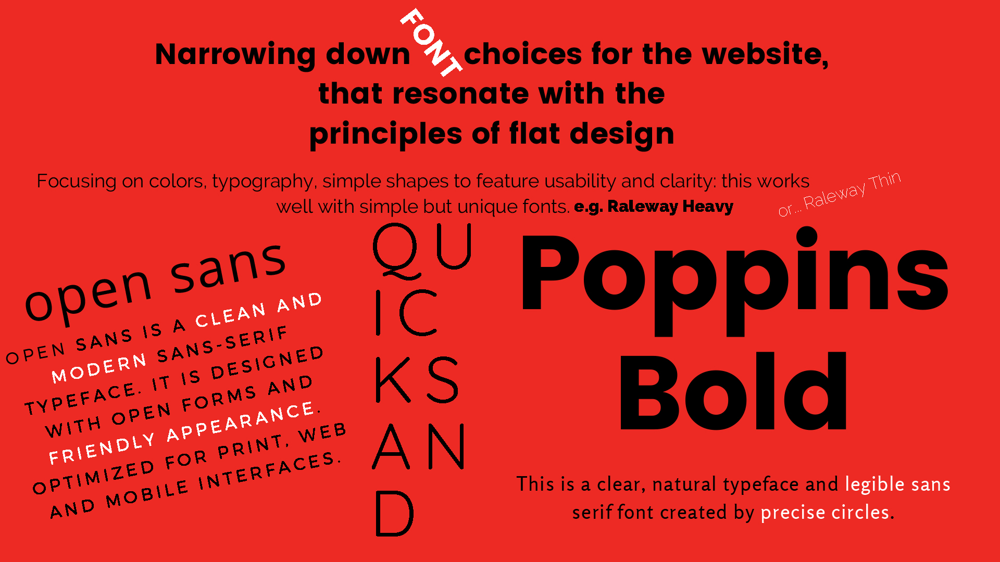
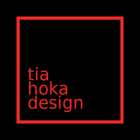

How did I make this?
Color palette
Firstly, the main focus was on using high contrast to advantage: flat designs bright color palette ensures that the text is clearly legible and noticeable. This is why bold black font is chosen on a bright red background. The color palette varies only nominally, to further emphasize minimum use of stylistic elements that give the illusion of three dimensions. The layout is therefore focused on a minimalist use of simple two-dimensional elements, typography and and bright colors. In most minimalist designs, color is used strategically to create visual interest or direct attention without adding any additional design elements or actual graphics. With less visual information competing for a users attention, color palettes are more noticeable and will be more influential in a sites impact. Therefore, only two main colors are in focus, whilst the other hues are merely complementary. Lastly, the main keywords used for representing the website were: simplicity of shapes, minimalism, bold typography, visual hierarchy.

The Poppins typeface family has been chosen for the website - to help further enunciate the geometry present in flat design. Geometric sans serif typefaces have been a popular design tool ever since these typefaces emerged. Poppins typeface is one of the new comers to this long tradition. Furthermore, this typeface is visually evoking the feel of the Swiss style, since it is based on pure geometrical shapes, particularly circles.

Each letterform is nearly monolinear, with some optical corrections applied to stroke joints where deemed necessary, to maintain an even typographic color, thus matching the necessary minimalistic layout for flat design. Its a display face that features both text figures and lining numerals, standard and discretionary ligatures, a pretty complete set of diacritics. Text figures are default in Raleway typeface, though it does feature a lining numerals set. The focus was always heavy on simple shapes to feature usability and clarity. Open Sans was considered as it is a humanist sans-serif typeface; it features wide fissures on many of its letters and it's highly legible on screen and at small sizes. Quicksand typeface was similarly considered mainly due to its matching obliques and a dash version for display and headings and because it was influenced by the geometric-style sans serif faces that were popular during the 1920s and 30s, and these are the fonts that are based on geometric forms - alluding to Swiss style - that have been optically corrected for better legibility.

Old logo under construction
The Tia Hoka logo is under continual construction - check back in a few to see the final iteration!